Diodos LED
¿Qué son los diodos LED y dónde se encuentran?
Los diodos LED nos rodean. Los vemos en los teléfonos celulares, automóviles, semáforos, nuestros hogares, etc. Cada vez que se enciende algo electrónico hay una gran posibilidad de que haya un diodo LED detrás. Están disponibles en una gran variedad de tamaños, formas y colores.
Las siglas LED provienen del inglés "Light Emitting Diode", lo cual significa "Diodo Emisor de luz".
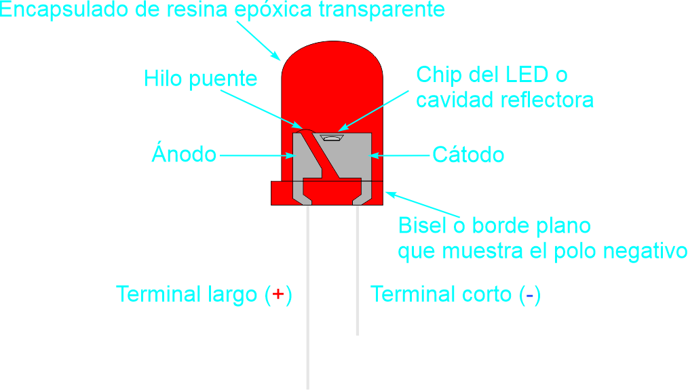
El diodo LED tiene un funcionamiento similar al diodo rectificador: sólo deja pasar la corriente en un sólo sentido como indica su símbolo, al cual se le añadieron 2 flechas indicando que emite luz cuando se pasa una corriente por él:
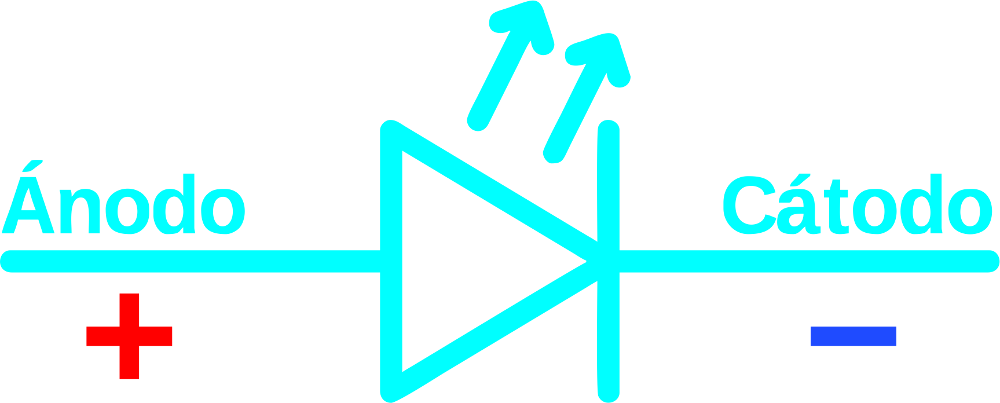
Sin embargo, en un diodo rectificador cuando está polarizado directamente y circula corriente de ánodo a cátodo, la potencia eléctrica consumida es disipada toda en calor:
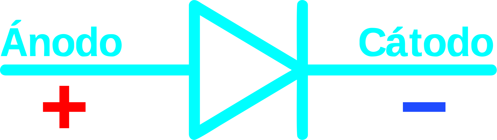
En un diodo LED la mayor parte de potencia eléctrica consumida se transforma en luz. Por este motivo, el diodo LED viene dentro de una cápsula de plástico, y en la parte superior dispone de una lente para mejorar la visión de la luz emitida.
Otra diferencia del diodo LED con respecto al diodo rectificador, es que la tensión que se debe superar en el diodo rectificador para que comience a circular una corriente en polarización directa, es de unos 0,5 a 0,6 Voltios aproximadamente, mientras que en un diodo LED este valor es mucho mayor, y es de unos 1,5 a 3,5 voltios. Además, la resistencia interna de los diodos LED es de un valor muy bajo, por lo que se necesitará una resistencia limitadora de corriente, en serie con el led, para que no se queme.
¿De qué depende la intensidad de la luz del LED?
La luz emitida por un diodo LED tendrá una longitud de onda (color) que va en función del tipo de compuesto químico que lo constituye.
La tensión que hay en extemos del LED depende del color que emite y de la intensidad de corriente para conseguir una luz aceptable.
Cuanto mayor sea la intensidad de corriente, mayor intensidad luminosa desprende el diodo LED, pero NUNCA deberá superar la intensidad de corriente máxima que figura en las hojas de características o datasheet.
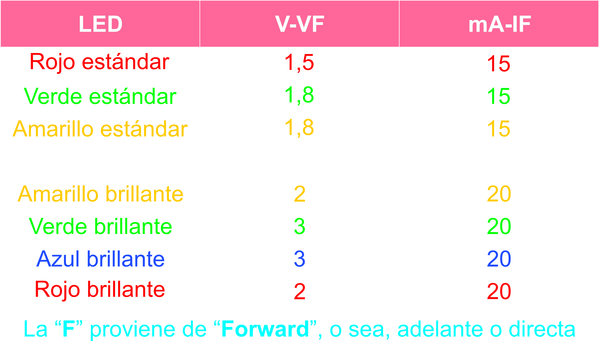
¿Por qué no se puede conectar directamente una tensión de, por ejemplo, 5V a un diodo LED?
La respuesta rápida es simple: se quema. Pero vamos a ver por qué ocurre esto observando el siguiente circuito:
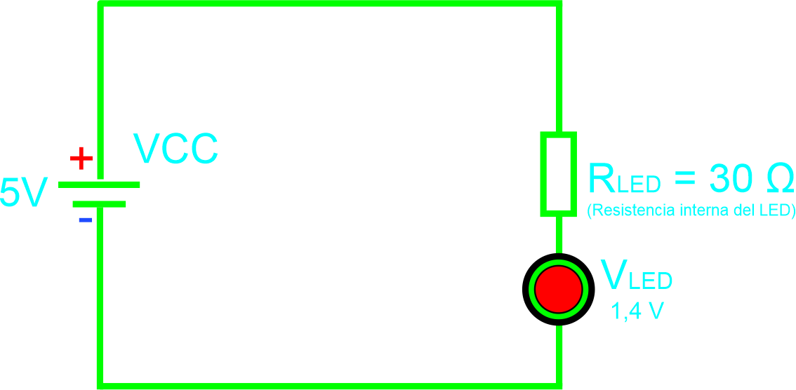
Si se sustituye el LED por un circuito eléctrico equivalente, aplicando la Ley de Ohm en extremos de su resistencia interna, resulta que la tensión en dicha resistencia será de 5V, menos 1,4V que se "come" el LED. A esto le dividimos el valor de la resistencia interna del LED, que es 30 Ω. El resultado es una corriente de 120 mA, muy superior a la corriente máxima que soporta el LED, la cual es de 30 mA.
Fórmula para calcular la Intensidad
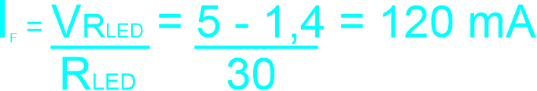
¡El LED se quema!
¿Cómo evitar que se queme el LED?
Para evitar que se queme, se conecta una resistencia en serie con el LED cuyo valor se obtiene aplicando la Ley de Ohm.
La corriente que pasa por la resistencia es la misma que pasará por el LED. El fabricante del LED indica que tiene una Intensidad de 20 mA.
La tensión en extremos de la resistencia, es la tensión de la fuente menos la tensión en extremos que hay en el LED indicado por el fabricante cuando se le hace circular una corriente de 20 mA.
Fórmula para calcular la Resistencia
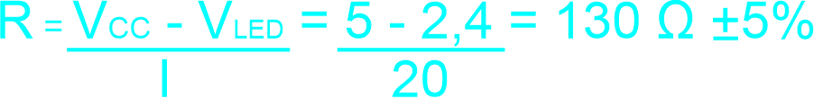
Nota: 5 V - 2,4 V / 20 mA me da como resultado 0,13. Para pasarlo a Ω multiplico por 1000 el resultado. Es por eso que en la fórmula simplifiqué su resultado en 130.
También se podría pasar los mA a A dividiendo entre 1000 a los 20 mA, entonces se dividiría 2,6 v / 0.02 obteniendo los 130 Ω como resultado.
¿Cómo calculamos la potencia que debe disipar la resistencia?
Es importante tener en cuenta la potencia o W de una resistencia, ya que esta se disipará en forma de calor.
La fórmula para calcular la potencia se obtiene multiplicando la Intensidad al cuadrado * el valor de la Resistencia
Fórmula para calcular la Potencia de la Resistencia
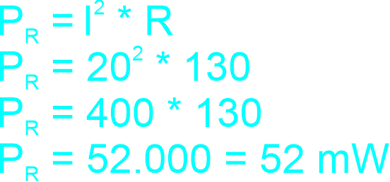
Esto quiere decir que con una resistencia de 1/8 W = 0,125 W ó 125 mW es más que suficiente para cubrir los 52 mW que consume un LED.
Formas de conectar varios LEDs
En ocasiones se podrá tener la necesidad de iluminar con varios LEDs, y se podrá hacer de 2 formas: en serie o en paralelo.
Configuración de LEDs en serie
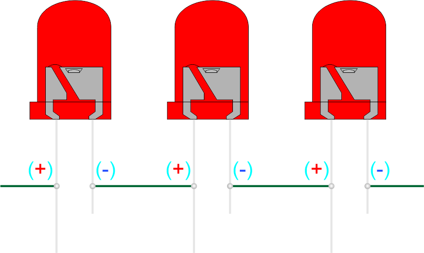
Ventaja de conectar los LEDs en serie: La corriente que pasa por cada LED es idéntica y todos los LEDs tienen la misma intensidad, por lo tanto, todos iluminan por igual.
Desventaja de conectar los LEDs en serie: el número de LEDs a conectar estará limitado por el valor tensión de la fuente, ya que la tensión total requerida es la suma de las tensiones de todos los LEDs conectados. Otra desventaja es que si un LED se apaga (por ejemplo, si se quema o se desconecta), todos los LEDs en la serie dejarán de funcionar, ya que el circuito se interrumpe.
Configuración de LEDs en paralelo
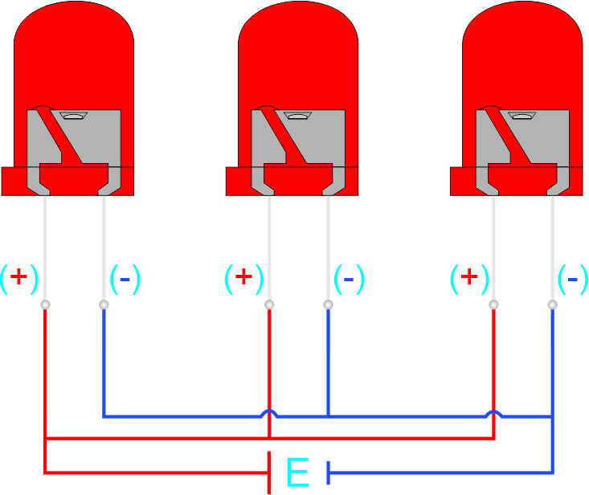
Ventaja de conectar los LEDs en paralelo: Ventaja de conectar los LEDs en paralelo: todos los LEDs se alimentan con una tensión fija que no disminuye con la cantidad de LEDs conectados. Esto asegura que cada LED reciba la misma tensión, facilitando un brillo uniforme.
Desventaja de conectar los LEDs en paralelo: el número de LEDs a conectar estará limitado por la cantidad de corriente (A) que suministre la fuente de alimentación.A medida que se añaden más LEDs en paralelo, la corriente total requerida aumenta, lo que puede superar la capacidad de la fuente de alimentación si no se tiene cuidado.
¿Cuántos diodos LED blancos de alta luminosidad y de 3 mm se podrán conectar en serie a una fuente de 12 V?
Para ello, se deberá saber la tensión que hay en cada LED blanco cuando se ilumina. Si se va al datasheet del LED blanco de alta luminosidad, los fabricantes proporcionan un rango de tensiones posibles cuando circula una determinada intensidad. Por ejemplo: FORWARD VOLTAGE 3,2~3,4 VCD.
En este caso se deberá tomar siempre el caso más desfavorable, es decir, cuando ciruclan 3,4 VCD que será la tensión más pequeña en sus extremos.
Ahora dividimos la tensión de la fuente entre la tensión más pequeña facilitada por el fabricante en extremos del LED.
Fórmula para calcular el Nº de LEDs en serie
Como se pudo observar en el resultado de la fórmula, el número de LEDs a conectar con una fuente de 12 V es de 3. Como no podemos tener una fracción de un diodo, redondeamos hacia abajo.
La tensión total que consumirán los 3 LEDs será de 9,6 V (3,2 V x 3). Por lo tanto, nos sobrarán 2,4 V (12 V - 9,6 V = 2,4 V).
Dicha tensión sobrante deberá caer en una resistencia en serie con los LEDs.
El valor de dicha resistencia siempre se determinará mediante la Ley de Ohm.
Circuito de 3 LEDs en serie
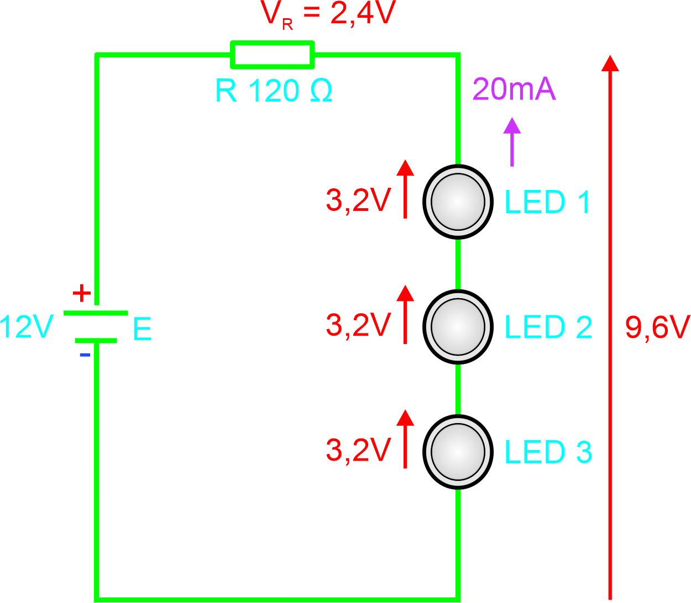
Ley de Ohm para calcular la Resistencia
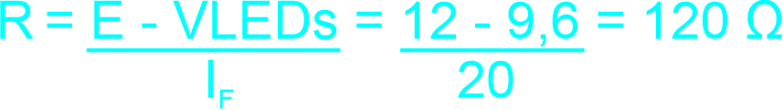
¿Y si quisiera conectar más LEDs?
Si quisiera aumentar el número de LEDs podré conectar en paralelo tantas ramas como intensidad me brinde la fuente de alimentación.
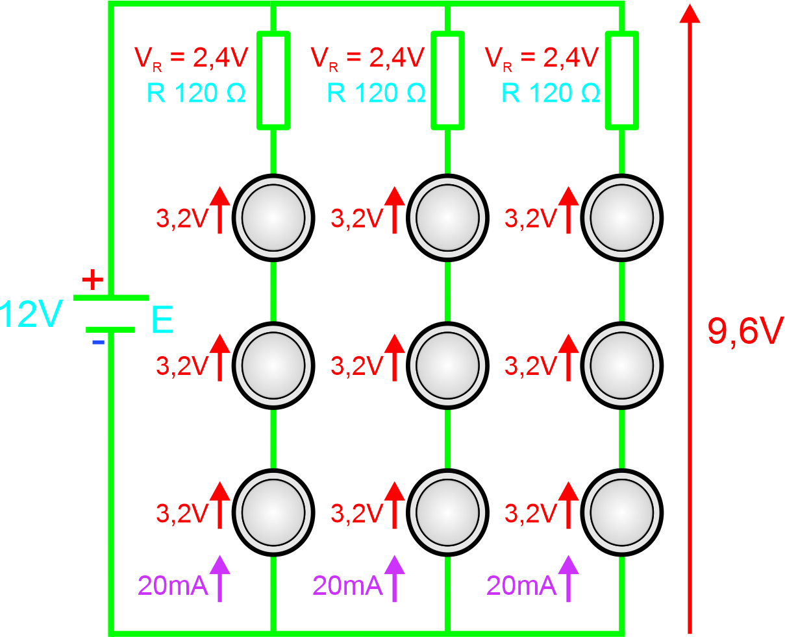
Por ejemplo: si la fuente es de 1 A y cada cadena de diodos LED necesita 20 mA, realizo la siguiente fórmula:
Entonces con una fuente de alimentación de 12 V y 1 A podré conectar 50 ramas de 3 LEDs cada una, es decir ¡Unos 150 LEDs!
¿Cuánta potencia consume el circuito?
Para responder a la pregunta, es necesario saber cuánta potencia se pierde en forma de calor en las resistencias del total suministrado por la fuente. Pero primero calculemos cuánta potencia entrega la fuente.
Fórmula para calcular la potencia de la fuente
Ahora es necesario saber cuánta potencia disipa la resistencia en serie conectada a la cadena de 3 LEDs. Dicho dato se puede calcular, ya sea sabiendo la tensión como la intensidad que consume la resistencia. A fines didácticos, se ponen las dos fórmulas, ya que el resultado es el mismo.
Fórmula para calcular la potencia de la resistencia (con V)
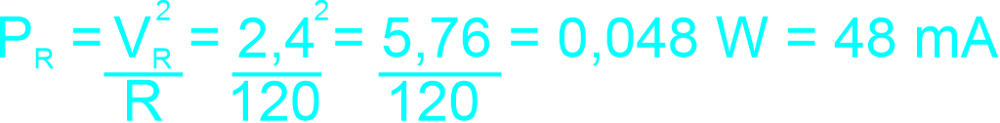
Fórmula para calcular la potencia de la resistencia (con I)
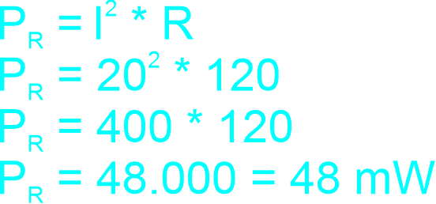
Cómo puede observarse, el resultado en ambas fórmulas es el mismo.
Ahora bien, como tenemos 50 ramas habrá 50 resistencias y por ende tenemos que multiplicar las 50 ramas por la potencia de 1 resistencia:
La potencia perdida en todas las resistencias es de 2,4 W.
¿Y de cuánto es el rendimiento en el circuito?
El rendimiento será el cociente entre la potencia útil (la potencia consumida por los componentes activos, como los LEDs) y la potencia suministrada por la fuente de alimentación.
Fórmula para calcular el rendimiento del circuito
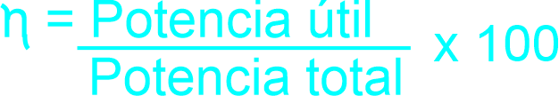
La Potencia útil es la potencia que realmente se utiliza en los componentes activos del circuito (en este caso, los LEDs). La potencia total es la potencia suministrada por la fuente de alimentación.
Como ya tenemos el dato de la potencia total (12 W de la fuente) sólo falta calcular la potencia útil. Para encontrar dicha potencia restamos la potencia disipada en las resistencias (2,4 W) de la potencia total suministrada (12 W):
Potencia útil = 12 W - 2,4 W = 9,6 W
Finalmente, el rendimiento del circuito es:
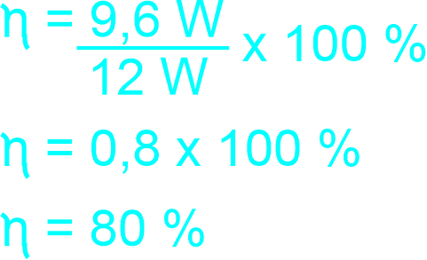
Por lo tanto, el rendimiento del circuito es del 80%
Nota: La letra 𝜂 es una letra del alfabeto griego que se utiliza comúnmente en física e ingeniería para representar el rendimiento o eficiencia de un sistema. En este contexto el rendimiento (η) es una medida de cuán eficientemente un sistema convierte la energía de entrada en energía útil.
El nombre de la letra η en griego es "eta".
Calcular la Intensidad sabiendo la tensión y los Watts
Adicionalmente, podemos calcular la corriente que consume uno o varios LEDs, así como también cualquier motor o artefacto eléctrico con la siguiente fórmula:
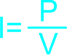
Dónde "I" es la intensidad o amperaje, "P" son los watts que consume el LED o aparato, y "V" es la tensión.
Calculadoras
Elegí qué querés calcular
Se pueden conectar hasta un máximo de LEDs en serie
Se pueden conectar hasta un máximo de LEDs en paralelo
El consumo es de Watts
La intensidad es de Amperes